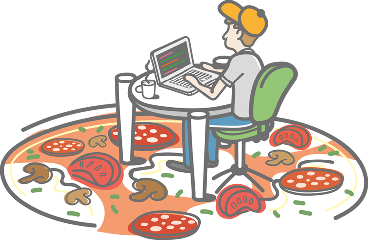

a front end infrastructure

Boxtent is a frontend workflow that gives you the infrastructure to build your next website following modern web development best practices to deliver a state of the art product for your users.
With the help of Grunt and Bower, Boxtent automates your workflow and takes care of assets optimization, concatenation, minification and much more. Boxtent includes out of the box support for:
.scss) compilation with Compass support.js concatenation.html, .css and .js minification.css automatic autoprefixing.css smart management.html includes
Boxtent is perfect for crafting small and simple .html, .css and .js performant website (like this one) but can be easily extended to suit more complex needs as well, leaving you the time to focus on what really matters: your code.
In a world of complex frontend workflows and frameworks, BoxTent tries to cover all the basic needs of frontend developing, without over complicating your life. Not all websites need super complex setups and languages, but all websites deserve to be created with performance in mind, using modern tools and with an infrastructure that grants speed and productivity.
Boxtent is based on Grunt for tasks automation, Bower for javascript libraries management and Git. Get ready by installing the following items before continuing:
$ npm install -g grunt-cli in the terminal
$ npm install -g bower in the terminal
You can now clone or download the Boxtent repository on your machine and start to install all default dependencies and gems to have it working.
To support Sass and Compass, you must have their gems installed on your machine. Type these in the terminal anywhere:
$ gem install sassand then:
$ gem install compass